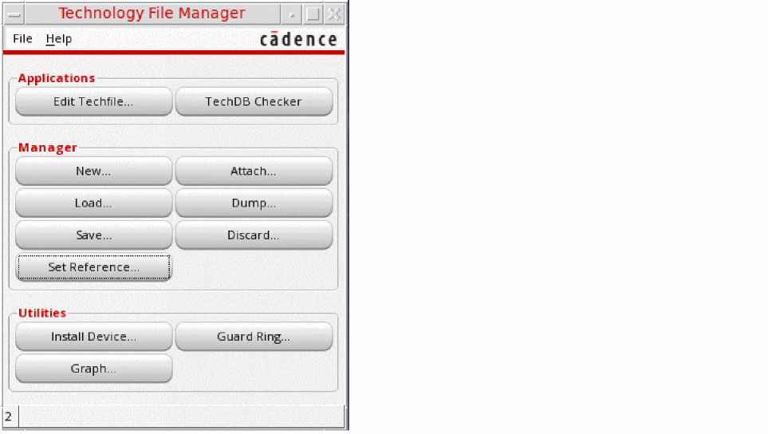
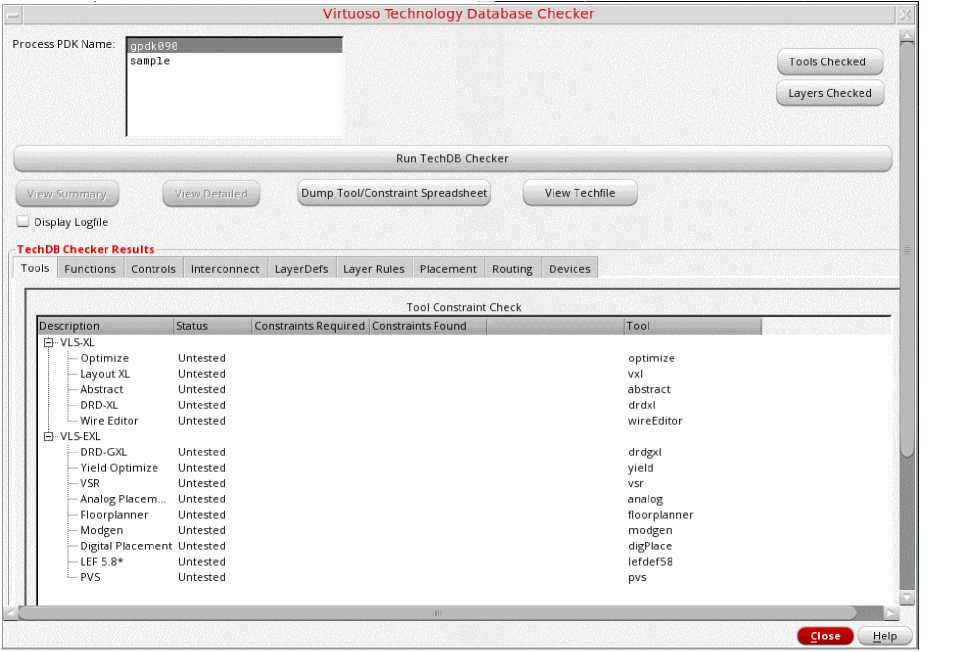
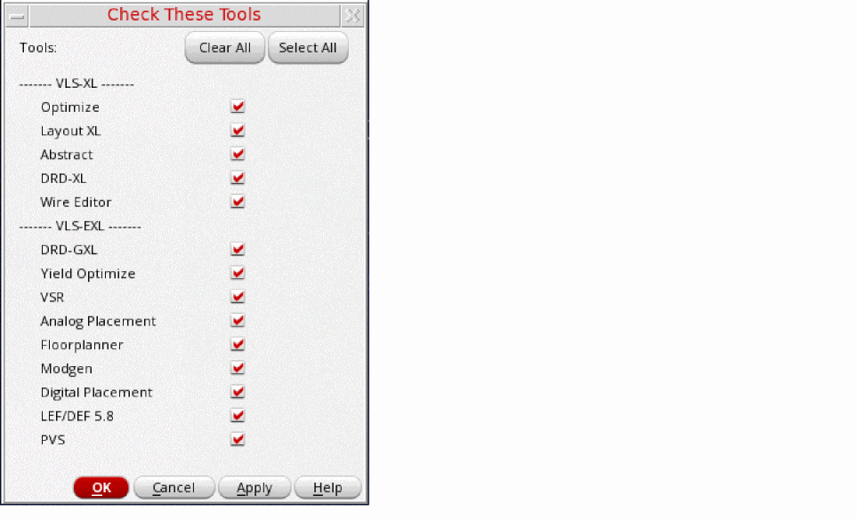
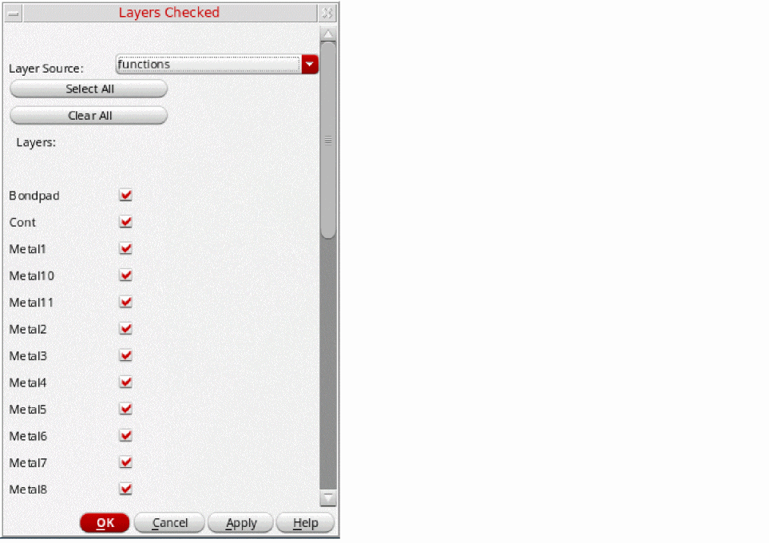
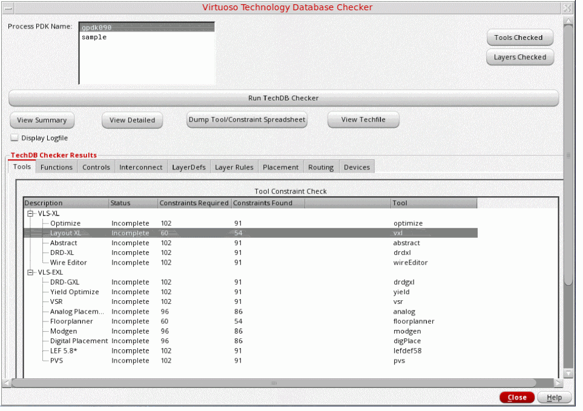
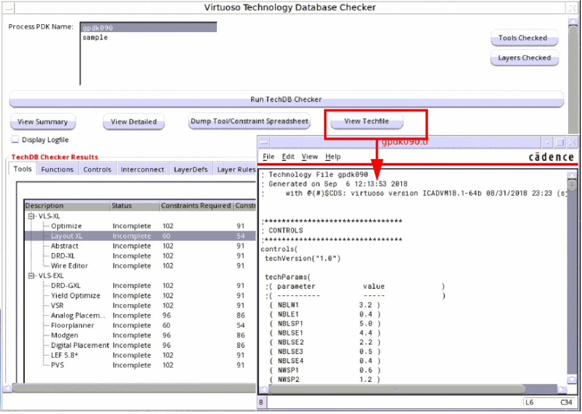

1
Using the Technology Database Checker
This chapter provides information on running Cadence Virtuoso® Technology Database Checker (TechDB Checker). It includes the following topics.
- Overview
- Prerequisites for Using TechDB Checker
- Running TechDB Checker
- Viewing the Technology File
- Viewing Tool Requirements
- Viewing Logs
For information on how to review the results of a run, see Chapter 2, “Analyzing Results.”
Overview
This section provides information on the following topics:
OpenAccess Technology Database
An OpenAccess (OA) technology database is an integral part of a process design kit (PDK). It defines process data like layer definitions and attributes, design constraints, and via definitions, and device definitions that are used throughout the design flow.
Typically, Virtuoso design technology data is initially defined in an ASCII technology file. This technology file is compiled into a binary OA technology database.
You can create and edit the ASCII technology file and compile it into a technology database. You can use Virtuoso Technology File Manager to compile a technology file into a technology database. For details, see Virtuoso Technology Data User Guide.
TechDB Checker Features
TechDB Checker queries an OA technology database for the required and optional data needed to function with Cadence tools.
- Inspects the technology database for compliance with:
- Highlights missing required and optional sections in the technology database
- Highlights missing, duplicate, and mutually exclusive constraints
- Supports incremental technology database (ITDB) structure
- Provides summarized, detailed, and structured reports
- Provides options to view technology file content and tool requirements
- Provides options to choose the tools and layers for which inspection of technology data must be conducted
Important Notes
- TechDB Checker does not verify if a technology database accurately represents a specific process technology. It queries the technology database for the required and optional data needed to function with Cadence tools.
-
This guide uses Virtuoso technology file terms instead of OpenAccess terms when referring to specific technology content. For example, this guide uses the term
functionsinstead ofoaMaterialTypes. -
TechDB Checker can identify the following types of constraints.
TechDB Checker Flow
The following figure illustrates the flow in which you use TechDB Checker.
To check a technology database:
- Start TechDB Checker and select the PDK library that contains the technology database.
-
If required, limit the scope of tools being checked.
By default, all tools are selected. -
If required, limit the scope of layers in the technology database being checked.
By default, all layers are selected. -
Run TechDB Checker.
For details on step 1 to step 4, see “Running TechDB Checker”. -
View results of the technology database investigation.
For details, see Chapter 2, “Analyzing Results.”.
You can view the technology database content and tool requirements that TechDB Checker uses as a basis for its analysis. TechDB Checker also logs the details of a technology database analysis in a file, which you can view.
Prerequisites for Using TechDB Checker
The Cadence library definition file cds.lib must have a reference to the PDK library that contains the technology database you want to check.
Running TechDB Checker
This section illustrates how you run TechDB Checker to check the OA technology database in the sample Cadence 45nm generic PDK (gpdk045) library.
To start inspect a technology database:
-
Choose Tools — Technology File Manager from the Virtuoso CIW menu bar.
The Technology File Manager form appears.
 -
Click TechDB Checker.
The Virtuoso Technology Database Checker form appears.
 -
Select the PDK library containing the technology database from the Process PDK Name list.
-
If required, select the tools for which TechDB Checker must inspect the technology database. All tools are selected by default.
To select tools, click Tools Checked to open the Check These Tools form, select the tools, and click OK to confirm your selection.
 -
If required, select the layers in the technology database. By default, all layers are selected.
To select layers, click Layers Checked to open the Layers Checked form. Select the section from the Layer Source drop-down list, and select the layers. Repeat to select more layers from other sections. Then click OK.
 -
Select the Display Logfile checkbox if you want to automatically display the log file immediately after TechDB Checker completes investigating the technology database.
The log file contains information that TechDB Checker stores for reference. -
Click Run TechDB Checker.
TechDB Checker starts investigating the technology database.
After completing the investigation, TechDB Checker displays the results in various tab sections. It also enables the View Summary and View Detailed buttons.

Viewing the Technology File
TechDB Checker lets you create an ASCII dump of the technology database and store it as a technology file in the run directory. The technology filename matches the PDK library name and has a .tf file extension.
- Select the PDK library containing the technology database from the Process PDK Name list.
-
Click View Techfile.
TechDB Checker runs the Virtuoso Technology File Dumper utility to create the technology file. It then displays the technology file.

Viewing Tool Requirements
You can view the required and optional constraints in a technology database for each Cadence tool that TechDB Checker supports. This information helps you identify the technology database sections that TechDB Checker uses as a base for reports.
To view technology database requirements for a Cadence tool:
- Select the PDK library containing the technology database from the Process PDK Name list.
- Select the Cadence tool from the Tools tab section.
-
Click Dump Tool/Constraint Spreadsheet.
TechDB Checker displays the TOOL - ToolName form with details about the required and optional information in various sections of the technology database for the selected tool.
The textrequiredindicates that the technology file must include this information for the selected tool. The textsupportedindicates that the tool can use this technology file content. - To save displayed information, scroll down to the end of the report and click Save To File.
Viewing Logs
TechDB Checker logs useful information while checking a technology database, which you can refer.
To display the log file automatically immediately after TechDB Checker finishes investigating a technology database:
- Select the PDK library containing the technology database.
- Select the Display Logfile checkbox.
-
Click Run TechDB Checker.
TechDB Checker starts investigating the technology database and stores details in a log file. After completing the investigation, it displays the log file.
To view the log file at any time after the technology database investigation is complete:
Return to top